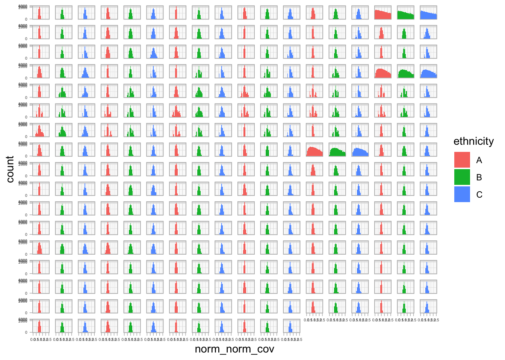
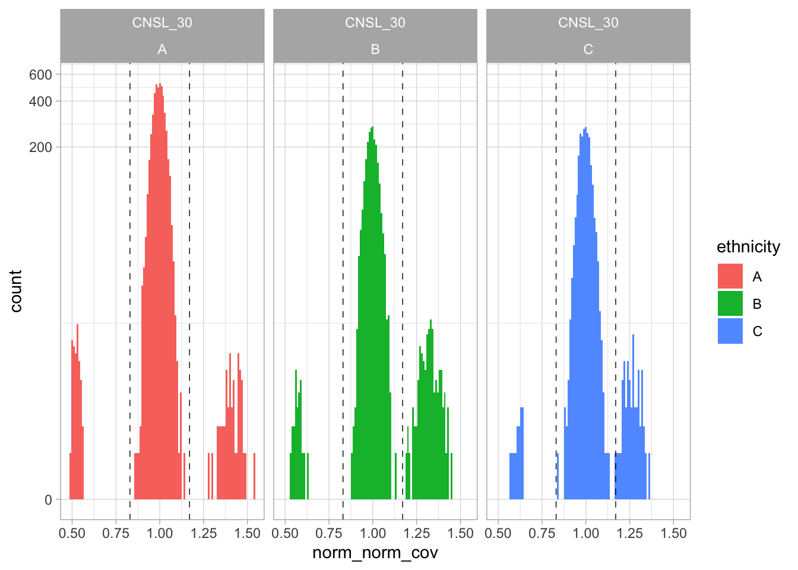
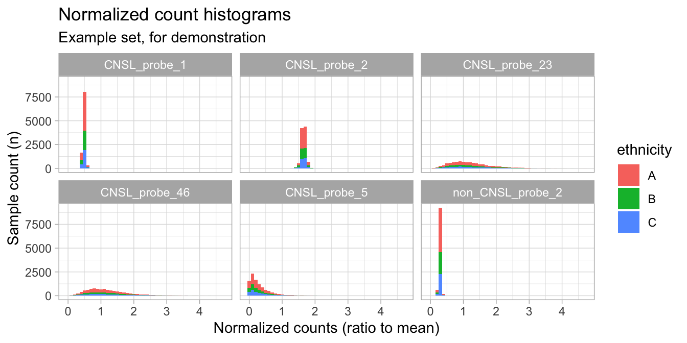
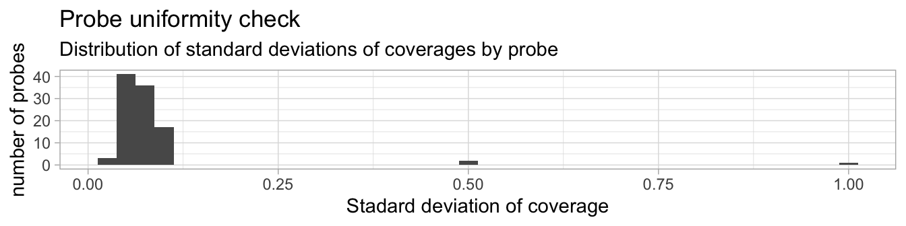
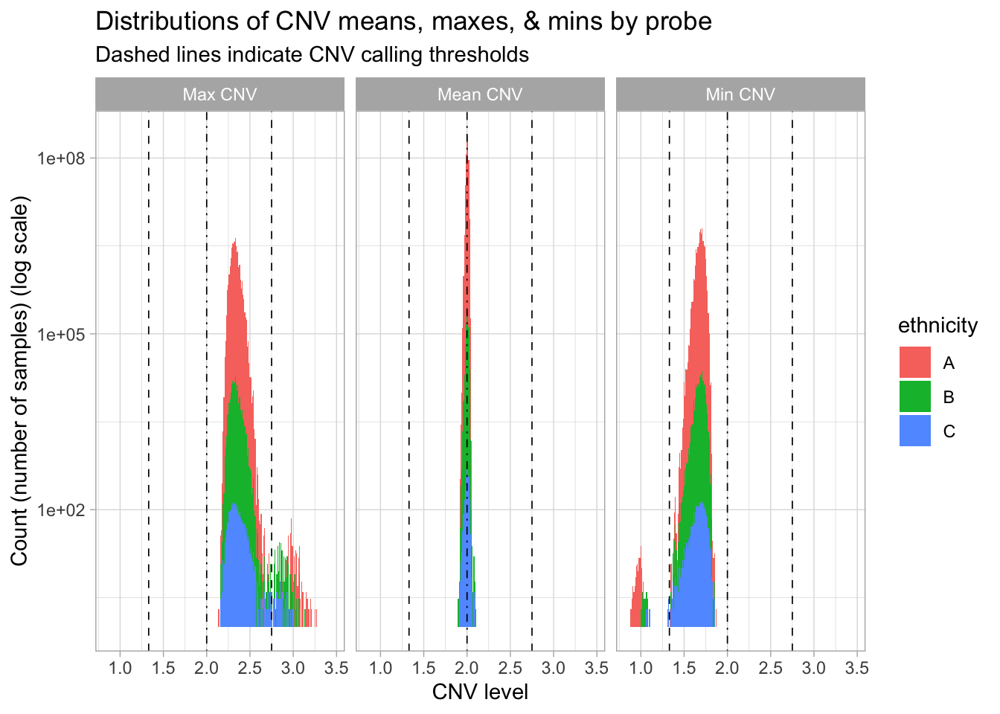
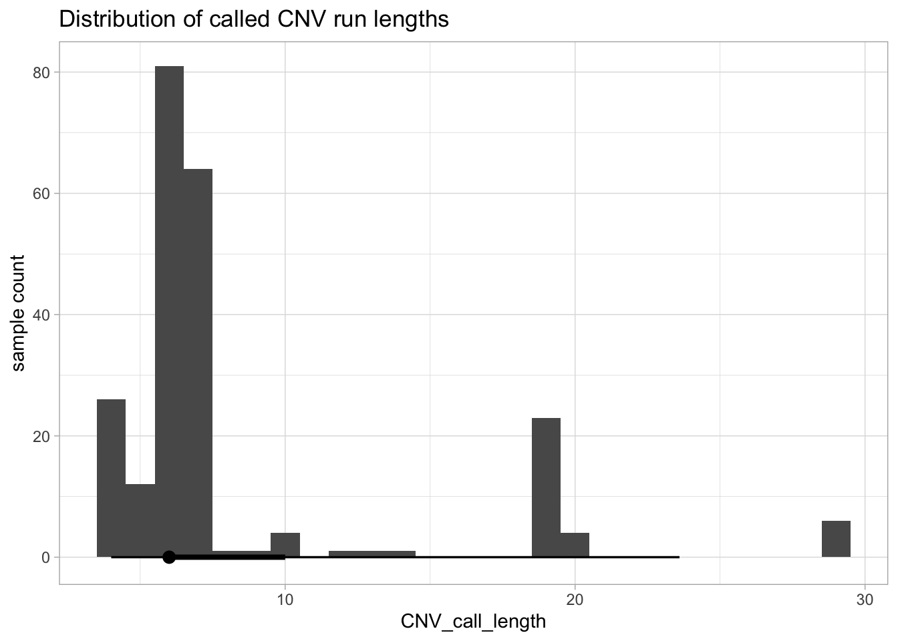
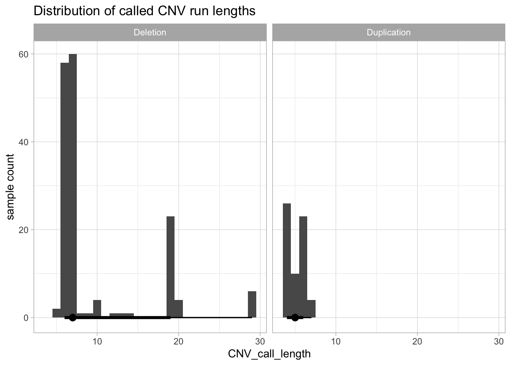
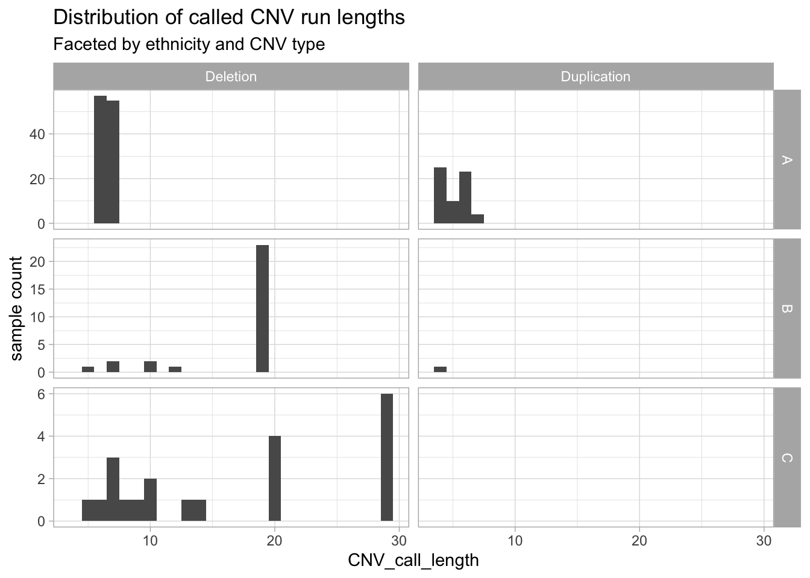

library(tidyverse, quietly = TRUE)
library(rlang)
library(here)
library(magrittr)
library(patchwork)
library(valr)
library(flextable)
library(mclogit)Summary
In this hypothetical exercise, a recently characterized disorder called under study is “CNV-emia”, an genetic disease showing autosomal recessive inheritance of mutations in the “CNSL” gene. The deletion/duplication breakpoints can vary from sample to sample (see table below), and it has been hypothesized that the breakpoints correspond with ethnicity. The breakpoint positions are known from the literature.
| Del/Dup index | 5´ breakpoint | 3´ breakpoint |
|---|---|---|
| 1 | CNSL_probe_32 | CNSL_probe_38 |
| 2 | CNSL_probe_27 | CNSL_probe_34 |
| 3 | CNSL_probe_20 | CNSL_probe_40 |
| 4 | CNSL_probe_10 | CNSL_probe_40 |
Three probes with off-trend uniformity are CNSL_5, CNSL_23, and CNSL_46. I would recommend these probes be re-designed for better uniformity of capture and lower off-target.
The CNV calling and statistical analysis indicated that, significantly, the duplication vs. deletion of a CNV helps predict ethnicity. While the hypothesized probe intervals were not statistically significant in the model, the control data show that the method has high precision. In the CNSL region, ethnicity A has a CNV frequency of 3.2%, followed by B with a frequency of 1.0%, followed lastly by C with a frequency of 0.8%; in terms of CNV type, A is 1.8x more likely to have a deletion than a duplication, B is heavily biased toward deletions, and C is exclusively deletions (n = 21). Due to interval overlap of many hypothesized breakpoints, the model is partly confounded because the probe CNV calls are not fully independent.
In order to predict the unknown ethnicity of another set of data, I would train a classifier machine-learning model, such as a random forest classifier, a logistic model, or a K-nearest neighbors model, on the data in this analysis. Best practice is to separate training, validation, and test data. Once trained, parameters optimized, and predictions reasonably accurate, I would apply the model to the unknown data.
Procedure
data <- read_csv(data_dir, show_col_types = FALSE) %>%
dplyr::rename("id" = 1)New names:
• `` -> `...1`Exploratory & Checks
colnames(data) %>% str_detect("probe") %>% sum()[1] 100How many are CNSL vs. non-CNSL
colnames(data) %>%
as_tibble() %>%
filter(str_detect(value, "probe")) %>%
mutate("probe_type" = case_when(str_detect(value, "non_CNSL_probe_") ~ "non-CNSL",
str_detect(value, "CNSL_probe_") ~ "CNSL",
TRUE ~ NA)) %>%
count(probe_type)| probe_type | n |
|---|---|
| CNSL | 50 |
| non-CNSL | 50 |
Check id uniqueness
count(data);| n |
|---|
| 10000 |
count(count(data, id, name = "num_occurences"))| n |
|---|
| 10000 |
All ids are unique.
Ethnicities are not balanced in the experiment.
Distributions of probe counts
probe_count_hist_facet <- data %>%
pivot_longer(contains("CNSL_probe"), values_to = "counts", names_to = "probe") %>%
ggplot(aes(counts, fill = ethnicity)) +
geom_histogram() +
facet_wrap(~ probe)
probe_count_hist_facet + theme(strip.text = element_blank(), axis.text = element_text(size = 5))`stat_bin()` using `bins = 30`. Pick better value with `binwidth`.
ggsave(paste0("file_prefix", "_", "probe_count_hist_facet", ".png"), probe_count_hist_facet,
width = 10, height = 10, dpi = 320)Normalize probe coverage
Normalize probe coverage withing samples (first)
So there are 100 probe columns. The only other columns are id and ethnicity. We have 50 CNSL probes (which are hypothesized to contribute to “CNV-emia”, an autosomal recessive disease), and 50 non-CNSL probes in the target enrichment capture.
“Due to variability of extraction efficiency in the lab and error in the quantification of DNA libraries, each sample has a slightly different average NGS read depth across all probes.”
norm_data <- data %>%
rowwise() %>%
# compute mean coverage for each sample (rowwise)
mutate("mean_sample_cov" = mean(c_across(contains("_probe_"))),
"n_probes_in_mean" = length(c_across(contains("_probe_")))) %>%
ungroup() %>%
relocate(mean_sample_cov, n_probes_in_mean, .after = ethnicity) %>%
# compute sample-normalized coverage for each probe
mutate(across(.cols = contains("_probe_"),
.fns = c("norm_cov" = ~ .x / mean_sample_cov),
.names = "{.fn}_{.col}"),
.by = id)Normalize probe coverage per probe across samples (second)
norm_data_filtered <- norm_data %>%
select(!c("CNSL_probe_5", "CNSL_probe_23", "CNSL_probe_46"))norm_norm_data <- norm_data_filtered %>%
mutate(across(.cols = contains("norm_cov"),
.fns = c("norm" = ~ .x / mean(.x) #,
# n_samples_in_norm originally here to ensure 10,000 samples per probe were in calc.
#"n_samples_in_norm" = ~ length(.x)
),
.names = "{.fn}_{.col}"))Normalize to coverage levels empirically seen in nonCNSL probes based on the assumptions of “nonCNSL” regions are CN=2 and ~1 or ~3, respectively. Thus, we can use the coverage data from nonCNSL probes to “calibrate” what a CN=2 sample looks like in this assay, after normalizing these data by sample and probe in the same way we did for the CNSL data.
Pivot 2x normalized data to long format
norm_norm_data_long <- norm_norm_data %>%
select(id, ethnicity, contains("norm_norm_cov")) %>%
pivot_longer(contains("norm_norm_cov"), values_to = "norm_norm_cov", names_to = "probe") %>%
# create order for probes
mutate("probe_number" = as.integer(str_extract(probe, "(?<=CNSL_probe_)\\d{1,2}")),
"probe_ordering" = if_else(str_detect(probe, "non_"),
probe_number + 50, probe_number)) %>%
# simplify names for easier plotting
mutate("probe" = str_remove(probe, "norm_norm_cov_"),
"probe" = str_remove(probe, "probe_"),
# impose integer ordering on probe name strings
"probe" = fct_reorder(as_factor(probe), probe_ordering)) %>%
select(!probe_ordering)Save 2x normalized data
write_csv(norm_norm_data_long, paste0(file_prefix, "_norm_norm_data_long", ".csv.gz"))quick plot to check results
norm_norm_count_hist_facet <- norm_norm_data_long %>%
ggplot(aes(norm_norm_cov, fill = ethnicity)) +
geom_histogram(binwidth = .1) +
scale_y_continuous(transform = "log1p") +
coord_cartesian(xlim = c(0, 2.5)) +
facet_wrap(~ probe + ethnicity) +
theme(strip.text = element_text(size = 3, margin = margin(0, 0, 0, 0)),
axis.text = element_text(size = 4))
norm_norm_count_hist_facet + theme(strip.text = element_blank(), axis.text = element_text(size = 4))
ggsave(paste0(file_prefix, "_", "norm_norm_count_hist_facet", ".png"), norm_norm_count_hist_facet,
width = 10, height = 10, dpi = 320)copy_n_res <- 0.17
CNSL_30_norm_norm_hist <- norm_norm_data_long %>%
filter(probe == "CNSL_30") %>%
ggplot(aes(norm_norm_cov, fill = ethnicity)) +
geom_histogram(binwidth = .01) +
geom_vline(xintercept = 1 - copy_n_res, linewidth = .25, linetype = "dashed") +
geom_vline(xintercept = 1 + copy_n_res, linewidth = .25, linetype = "dashed") +
scale_y_continuous(transform = "log1p") +
#coord_cartesian(xlim = c(0, 2.5)) +
facet_wrap(~ probe + ethnicity)
CNSL_30_norm_norm_hist
ggsave(paste0(file_prefix, "_", "CNSL_30_norm_norm_hist", ".png"), CNSL_30_norm_norm_hist,
width = 5, height = 3, dpi = 320)set.seed(123)
norm_norm_cov_lineplot <- norm_norm_data_long %>%
select(id, ethnicity) %>%
slice_sample(n = 33, by = ethnicity) %>%
left_join(norm_norm_data_long, by = c("id", "ethnicity")) %>%
ggplot(aes(y = norm_norm_cov, x = probe_number, color = ethnicity)) +
geom_line() +
facet_wrap(~ id, ncol = 1) +
theme(strip.text = element_text(size = 3, margin = margin(0, 0, 0, 0)),
axis.text = element_text(size = 4))
ggsave(paste0(file_prefix, "_", "norm_norm_cov_lineplot", ".png"), norm_norm_cov_lineplot,
width = 5, height = 20, dpi = 320)probe_norm_count_hist_facet <- norm_data %>%
pivot_longer(contains("norm_cov"), values_to = "norm_counts", names_to = "probe") %>%
ggplot(aes(norm_counts, fill = ethnicity)) +
geom_histogram(binwidth = 0.1) +
facet_wrap(~ probe)
probe_norm_count_hist_limited_facet <- norm_data %>%
pivot_longer(contains("norm_cov"), values_to = "norm_counts", names_to = "probe") %>%
mutate("probe" = str_remove(probe, "norm_cov_")) %>%
arrange(probe) %>%
filter(probe %in% c("CNSL_probe_5", "CNSL_probe_23", "CNSL_probe_46",
"CNSL_probe_1", "CNSL_probe_2", "non_CNSL_probe_2")) %>%
ggplot(aes(norm_counts, fill = ethnicity)) +
geom_histogram(binwidth = 0.1) +
facet_wrap(~ probe) +
labs(title = "Normalized count histograms",
subtitle = "Example set, for demonstration",
y = "Sample count (n)",
x = "Normalized counts (ratio to mean)")
probe_norm_count_hist_limited_facet
ggsave(paste0("file_prefix", "_", "probe_norm_count_hist_facet", ".png"), probe_norm_count_hist_facet,
width = 10, height = 10, dpi = 320)Most of the normalized coverage distributions of probes look great! The per-sample normalization worked well. However, we can see (highlighted specifically here, in the example) some probes that are not behaving well.
Identify bad probes
probe_eval_df <- norm_norm_data_long %>%
summarize(across(norm_norm_cov,
.fns = c("mean" = mean,
"sd" = sd,
"min" = min
#"max" = max
),
.names = "{.fn}_{.col}"),
#"n_samples" = n(),
.by = c(probe, probe_number)) %>%
mutate(across(where(is.numeric), ~ signif(.x, 3)))probe_uniformity_dist_plot <- probe_eval_df %>%
ggplot(aes(sd_norm_norm_cov)) +
geom_histogram(binwidth = 0.025) +
labs(title = "Probe uniformity check",
subtitle = "Distribution of standard deviations of coverages by probe",
y = "number of probes",
x = "Stadard deviation of coverage")
probe_uniformity_dist_plot
So we have three outlier probes with poor uniformity of coverage. Let’s list out what they are.
probe_eval_df %>% arrange(desc(sd_norm_norm_cov)) %>% slice_head(n = 6)| probe | probe_number | mean_norm_norm_cov | sd_norm_norm_cov | min_norm_norm_cov |
|---|---|---|---|---|
| CNSL_5 | 5 | 1 | 1.010 | 0.0000 |
| CNSL_23 | 23 | 1 | 0.512 | 0.0362 |
| CNSL_46 | 46 | 1 | 0.512 | 0.0409 |
| CNSL_32 | 32 | 1 | 0.111 | 0.4350 |
| CNSL_36 | 36 | 1 | 0.108 | 0.4270 |
| non_CNSL_23 | 23 | 1 | 0.100 | 0.6320 |
In this head of the table of uniformity sorted by standard deviation of the probes, the three probes with off-trend uniformity are CNSL_5, CNSL_23, and CNSL_46. I would recommend these probes be re-designed for better uniformity of capture and lower off-target.
In target enrichment, probes that perform poorly (due to their design / positioning) typically exhibit high rates of off-target reads (not directly observable in this data set) and a high variability in coverage from sample-to-sample (i.e. low uniformity of coverage). This analysis uses a rough measure of uniformity to identify potentially poorly-performing probes.
Filter out bad probes
norm_norm_data_long %<>% filter(str_detect(probe, "(?<!non_)(CNSL_5|CNSL_23|CNSL_46)", negate = TRUE))Convert coverage to integer CNV levels
nonCNSL_CNV_long <- norm_norm_data_long %>%
# compute non-CNSL coverage means
filter(str_detect(probe, "non")) %>%
mutate("mean_nonCNSL_cov" = mean(norm_norm_cov),
"sd_nonCNSL_cov" = sd(norm_norm_cov),
"n_samples" = n(),
.by = probe)
nonCNSL_CNV_long %>%
distinct(probe, mean_nonCNSL_cov, n_samples) %>%
summarise("mean cov for all non-CNSL probes" = mean(mean_nonCNSL_cov),
"SD cov for all non-CNSL probes" = sd(mean_nonCNSL_cov),
"min cov" = min(mean_nonCNSL_cov),
"max cov" = max(mean_nonCNSL_cov),
"n probes" = n(),
"n samples in each mean" = mean(n_samples))| mean cov for all non-CNSL probes | SD cov for all non-CNSL probes | min cov | max cov | n probes | n samples in each mean |
|---|---|---|---|---|---|
| 1 | 0 | 1 | 1 | 50 | 10000 |
This analysis shows that all non-CNSL probes have a mean coverage (across the 10,000 samples sequenced) of exactly 1.0 . Thus, to convert these coverage values to CNV values (normalized haploid genomic equivalents), we must multiply by 2. (The standard deviation is so small as to be negligible, and is likely caused by floating point calculation error accumulation. This is supported by the min and max calculations in the next columns of the summary table.)
norm_norm_data_long %<>% mutate("CNV_level" = norm_norm_cov * 2)Save 2x normalized data
write_csv(norm_norm_data_long, paste0(file_prefix, "_norm_norm_data_long", ".csv.gz"))Analyze to detect copy number variations (unsing rle)
Run length encoding is a lossless form of compression that encodes a data series as a different series where each consecutive repeated value is recorded as the value and the number of repeats. In R, this is accomplished with the rle function, and the output is a linked pair of lists where the values and number of repeats occupy the same position in their respective lists.
We can take advantage of run length encoding not for its compression properties, but for its ability to variably call the number of consecutive values. We will use TRUE/FALSE binary values (or Dup, Del, and No CNV values) for whether there is a CNV (deletion or duplication).
However, because we have eliminated three probes from the analysis, and because the start and stop positions of the CNV will be reported in units of list elements —not probes—, we have to create a secondary positional order column. This will allow for seamless consecutive CNV calling, and for conversion back to probe number annotations used in the original dataset.
norm_norm_data_long %<>%
# new code to correct for probe position
mutate("probe_CNSL_target" = str_extract(probe, "(non_)*CNSL")) %>%
mutate("continuous_probe_id" = row_number() - 1, # row_number() starts at 1
.by = c(id, ethnicity, probe_CNSL_target))As expected, there should be 50 non-CNSL probes, and 47 CNSL probes.
Run rle CNV detection
Make plot to set threshold by eye
cnv_level_dist_tbl <- norm_norm_data_long %>%
summarize("Mean CNV" = mean(CNV_level),
"Max CNV" = max(CNV_level),
"Min CNV" = min(CNV_level),
.by = c(id, ethnicity)) %>%
# pivot longer for faceted plots
pivot_longer(cols = c("Mean CNV", "Max CNV", "Min CNV"),
names_to = "Measure", values_to = "value")cnv_call_threshold <- 0.9
cnv_level_dist <- cnv_level_dist_tbl %>%
ggplot(aes(value, fill = ethnicity)) +
geom_histogram(binwidth = .01) +
geom_vline(xintercept = 2, linetype = "dotdash", linewidth = .3) +
geom_vline(xintercept = 1.33, linetype = "dashed", linewidth = .3) +
geom_vline(xintercept = 2.75, linetype = "dashed", linewidth = .3) +
scale_y_continuous(transform = "log10") +
facet_wrap(~ Measure) +
# theme(strip.text = element_text(size = 3, margin = margin(0, 0, 0, 0)),
# axis.text = element_text(size = 4)) +
labs(title = "Distributions of CNV means, maxes, & mins by probe",
subtitle = "Dashed lines indicate CNV calling thresholds",
x = "CNV level",
y = "Count (number of samples) (log scale)")
cnv_level_dist
The above plot shows the distribution of CNV levels in samples, and puts the distribution in the context of manually (by eye) setting thresholds of a Deletion (low) or a Duplication (high).
ggsave(paste0(file_prefix, "_", "cnv_level_dist", ".png"), cnv_level_dist,
width = 8, height = 5, dpi = 320)Apply thresholds in rle analysis
cnv_rle <- function(sub_df, lower_thresh, upper_thresh){
# check that thresholds are valid
if(lower_thresh > upper_thresh) stop("Error: lower CNV threshold, `lower_thresh`, must be less than the upper CNV threshold, `upper_thresh`.")
sub_df_cnv_calls <- sub_df %>%
mutate("CNV_call" = case_when(CNV_level <= lower_thresh ~ "Deletion",
CNV_level >= upper_thresh ~ "Duplication",
TRUE ~ "No CNV"))
df_rle <- bind_cols(
"rle_lengths" = rle(sub_df_cnv_calls$CNV_call)[[1]],
"rle_values" = rle(sub_df_cnv_calls$CNV_call)[[2]]
) %>%
mutate("start_pos" = as.integer(lag(cumsum(rle_lengths))) + 1,
"end_pos" = as.integer(cumsum(rle_lengths))) %>%
replace_na(list("start_pos" = 0))
return(df_rle)
}cnv_rle <- norm_norm_data_long %>%
nest(.by = c("id", "ethnicity", "probe_CNSL_target")) %>%
mutate("rle_result" = map(data, ~ cnv_rle(.x, lower_thresh = 1.33, upper_thresh = 2.75))) %>%
select(!data) %>%
unnest(c(rle_result)) %>%
mutate("CNV_call_length" = as.integer(end_pos - start_pos))cnv_rle_hits <- cnv_rle %>%
filter(rle_values != "No CNV" & CNV_call_length >= 4)Analyze the analysis
In the hits, are there any samples with more than one CNV call?
cnv_rle_hits %>% count(id, name = "number CNV contigs") %>% count(`number CNV contigs`, name = "number of samples")| number CNV contigs | number of samples |
|---|---|
| 1 | 206 |
| 2 | 8 |
| 3 | 1 |
In this rle analysis using the above thresholds, 206 samples have one CNV detected, 8 samples have 2 CNVs called, and 1 sample has 3.
How many CNVs are too short to make the cut?
1359 out of 21,951 total called CNVs have a consecutive length of less than 3 probes
(cnv_rl_dist <- cnv_rle_hits %>%
ggplot(aes(CNV_call_length)) + geom_histogram(binwidth = 1) +
ggdist::stat_dist_pointinterval() +
labs(title = "Distribution of called CNV run lengths",
y = "sample count"))
The above QC plot shows the distribution of the consecutive length of the called CNV regions. We see the median length is 6, with a standard deviation of 5.8; the distribution is skewed to the left, with some potential groupings of CNV run lengths.
cnv_rl_dist + facet_wrap(~ rle_values)
The deletions tend to occupy ~ 3 clusters fo lengths, around 6~7 probes, ~19 probes, and ~ 29 probes. The duplications are more clustered around ~5 probes in length.
cnv_rle_hits %>%
ggplot(aes(CNV_call_length)) + geom_histogram(binwidth = 1) +
facet_grid(ethnicity ~ rle_values, scales = "free_y") +
labs(title = "Distribution of called CNV run lengths",
subtitle = "Faceted by ethnicity and CNV type",
y = "sample count")
cnv_rle_hits_tidy_bed <- cnv_rle %>%
# keep observations where No CNV is the call, or it's hit based on 4 consecutive probes
filter(rle_values == "No CNV" | CNV_call_length >= 4) %>%
# convert start positions to probe number
left_join(probe_number_lookup_tbl,
by = c("start_pos" = "continuous_probe_id",
"probe_CNSL_target"),
suffix = c("", "_start")) %>%
# convert end positions to probe number
mutate(end_pos = end_pos - 1) %>%
left_join(probe_number_lookup_tbl,
by = c("end_pos" = "continuous_probe_id",
"probe_CNSL_target"),
suffix = c("_start", "_end")) %>%
# prepare dataframe for bed tools (equivalent)
rename("chrom" = probe_CNSL_target, "start" = probe_number_start, "end" = probe_number_end)Here we have what looks like evidence we can classify the samples into ethnicity based on the status of the deletion v. duplication, and the run length of the consecutive number of probes affected by each type of genomic aberration.
Hard-code hypothesized breakpoints
Note that bed format specifies that the start position for an interval is zero based and the end position is one-based. So we will have to manually add 1 to the end position of the probes in the hypothesis table.
Using a R-dataframe-compatible version of bedtools closest to compute data for breakpoint hypotheses.
# filtering out non-CNSL calls, because they are not in the hypothesis table
cnv_rle_closest <- valr::bed_closest(filter(cnv_rle_hits_tidy_bed, chrom != "non_CNSL"),
breakpoints_bed_df,
overlap = TRUE) %>%
arrange(id.x)cnv_rle_hits_closest <- cnv_rle_closest %>%
# keep only CNV-positives
filter(rle_values.x != "No CNV") %>%
# tidy up factors and leveling
mutate(ethnicity.x = as_factor(ethnicity.x),
name.y = as_factor(name.y)) %>%
mutate("name.y" = fct_relevel(name.y,
"CNSL_probe_32-CNSL_probe_38", "CNSL_probe_27-CNSL_probe_34",
"CNSL_probe_20-CNSL_probe_40", "CNSL_probe_10-CNSL_probe_40")) %>%
# sort for priority of keeping one per sample
arrange(id.x, .dist, desc(.overlap), name.y) %>%
# sort to prioritize lowest distance, highest overlap
distinct(id.x, .keep_all = TRUE)cnv_rle_closest %>%
count(id.x) %>%
summarize("mean CNVs per sample" = mean(n),
"SD CNVs per sample" = sd(n))
cnv_rle_hits_closest %>% count()| mean CNVs per sample | SD CNVs per sample |
|---|---|
| 4.382 | 1.907312 |
| n |
|---|
| 215 |
215 samples have a CNV called. 891 CNVs were called, meaning on average each positive sample has 4.14 CNVs called.
cnv_rle_summary <- cnv_rle_closest %>%
# tidy up factors and leveling
mutate(ethnicity.x = fct_relevel(as_factor(ethnicity.x), LETTERS[1:3]),
name.y = as_factor(name.y)) %>%
mutate("name.y" = fct_relevel(name.y,
"CNSL_probe_32-CNSL_probe_38", "CNSL_probe_27-CNSL_probe_34",
"CNSL_probe_20-CNSL_probe_40", "CNSL_probe_10-CNSL_probe_40")) %>%
summarize("n" = n(),
"mean_CNV_length" = mean(CNV_call_length.x),
"sd_CNV_length" = sd(CNV_call_length.x),
"mean_overlap" = mean(.overlap),
"sd_overlap" = sd(.overlap),
"mean_distance" = mean(abs(.dist)),
"sd_distance" = sd(abs(.dist)),
.by = c(ethnicity.x, rle_values.x, name.y)) %>%
mutate(across(where(is.double), ~ signif(.x, digits = 4))) %>%
mutate("percent" = signif(100 * n / sum(n), digits = 3),
.by = c(ethnicity.x, name.y)) %>%
relocate(percent, .after = n) %>%
arrange(ethnicity.x, rle_values.x, name.y)cnv_rle_summary %>%
rename("ethnicity" = ethnicity.x, "CNV type" = rle_values.x, "probe name" = name.y) %>%
mutate("probe name" = str_remove_all(`probe name`, "CNSL_probe_")) %>%
select(!c(sd_CNV_length, sd_overlap, sd_distance)) %>%
dplyr::rename("CNV_length" = mean_CNV_length, "overlap" = mean_overlap, "distance" = mean_distance) %>%
filter(`CNV type` != "No CNV")| ethnicity | CNV type | probe name | n | percent | CNV_length | overlap | distance |
|---|---|---|---|---|---|---|---|
| A | Deletion | 32-38 | 112 | 2.0700 | 6.491 | 3.527 | 0.00000 |
| A | Deletion | 27-34 | 112 | 2.0700 | 6.491 | 3.964 | 0.00000 |
| A | Deletion | 20-40 | 112 | 2.0300 | 6.491 | 5.491 | 0.00000 |
| A | Deletion | 10-40 | 112 | 2.0300 | 6.491 | 5.491 | 0.00000 |
| A | Duplication | 32-38 | 62 | 1.1500 | 5.097 | 2.629 | 0.37100 |
| A | Duplication | 27-34 | 62 | 1.1500 | 5.097 | 2.694 | 0.08065 |
| A | Duplication | 20-40 | 62 | 1.1300 | 5.097 | 4.097 | 0.00000 |
| A | Duplication | 10-40 | 62 | 1.1300 | 5.097 | 4.097 | 0.00000 |
| B | Deletion | 32-38 | 28 | 1.0100 | 17.250 | 6.357 | 0.14290 |
| B | Deletion | 27-34 | 29 | 1.0100 | 16.830 | 6.897 | 0.06897 |
| B | Deletion | 20-40 | 29 | 0.9600 | 16.830 | 16.720 | 0.00000 |
| B | Deletion | 10-40 | 29 | 0.9600 | 16.830 | 16.720 | 0.00000 |
| B | Duplication | 32-38 | 1 | 0.0359 | 4.000 | 2.000 | 0.00000 |
| B | Duplication | 27-34 | 1 | 0.0348 | 4.000 | 3.000 | 0.00000 |
| B | Duplication | 20-40 | 1 | 0.0331 | 4.000 | 3.000 | 0.00000 |
| B | Duplication | 10-40 | 1 | 0.0331 | 4.000 | 3.000 | 0.00000 |
| C | Deletion | 32-38 | 15 | 0.5980 | 19.800 | 5.200 | 0.26670 |
| C | Deletion | 27-34 | 19 | 0.7470 | 17.680 | 5.000 | 1.05300 |
| C | Deletion | 20-40 | 21 | 0.8040 | 16.670 | 11.140 | 0.38100 |
| C | Deletion | 10-40 | 21 | 0.7950 | 16.670 | 16.240 | 0.00000 |
write_csv(cnv_rle_summary, paste0(file_prefix, "_", "cnv_rle_global_summary.csv"))Statistical analysis
We need to model the evidence in the data (CNVs, which locus they’re in) to predict ethnicity. Ethnicity has 3 levels, CNVs have 3 (or 2 when omitting no CNV), and locus has 4 levels, so we need a multinomial logit models, which is what mclogit provides.
summary(probes_mblogit)
Call:
mblogit(formula = ethnicity.x ~ name.y + rle_values.x, data = .,
weights = n)
Equation for B vs A:
Estimate Std. Error z value Pr(>|z|)
(Intercept) -1.38520 0.20791 -6.662 2.69e-11 ***
name.yCNSL_probe_27-CNSL_probe_34 0.03364 0.29053 0.116 0.908
name.yCNSL_probe_20-CNSL_probe_40 0.03364 0.29053 0.116 0.908
name.yCNSL_probe_10-CNSL_probe_40 0.03364 0.29053 0.116 0.908
rle_values.xDuplication -2.76727 0.51474 -5.376 7.62e-08 ***
Equation for C vs A:
Estimate Std. Error z value Pr(>|z|)
(Intercept) -2.0102 0.2748 -7.314 2.59e-13 ***
name.yCNSL_probe_27-CNSL_probe_34 0.2361 0.3701 0.638 0.524
name.yCNSL_probe_20-CNSL_probe_40 0.3362 0.3633 0.925 0.355
name.yCNSL_probe_10-CNSL_probe_40 0.3362 0.3633 0.925 0.355
rle_values.xDuplication -16.8589 706.1172 -0.024 0.981
---
Signif. codes: 0 '***' 0.001 '**' 0.01 '*' 0.05 '.' 0.1 ' ' 1
Approximate residual Deviance: 1076
Number of Fisher scoring iterations: 14
Number of observations: 891 Interpretation of CNV data against hypothesized breakpoints
Ethnicity A has CNVs in the CNSL region detected 3.2% of the time. When there is a CNV, 2.07% are Deletions in the either of the CNSL_probe_27-CNSL_probe_34 or CNSL_probe_32-CNSL_probe_38 regions, and 1.13% are Duplications, primarily in the CNSL_probe_20-CNSL_probe_40 region. Because CNSL_probe_10-CNSL_probe_40 is a superset of all other regions, we can conclude from the counts / frequencies being the same for all four hypothesized regions that these CNVs are occurring over the narrowest possible interpretation.
Ethnicity B has CNVs in the CNSL region detected 1% of the time. When there is a CNV, 0.96% of the time it’s a Deletion in CNSL_probe_20-CNSL_probe_40, and 0.0331% of the time (n = 1) it’s a Duplication with overlap for both CNSL_probe_27-CNSL_probe_34 and CNSL_probe_32-CNSL_probe_38.
Ethnicity C has CNVs in the CNSL region detected 0.8% of the time. When there is a CNV, it’s a Deletion in CNSL_probe_10-CNSL_probe_40 that occurs 0.795% of samples, with a mean overlap of 16.24 probes.
Global analysis of ethnicities
cnv_rle_global_counts <- cnv_rle_hits_tidy_bed %>%
dplyr::rename("probe_CNSL_target" = chrom) %>%
count(ethnicity, probe_CNSL_target, rle_values) %>%
mutate("percent" = signif(n / sum(n) * 100, 3),
.by = c(ethnicity, probe_CNSL_target))
cnv_rle_global_counts| ethnicity | probe_CNSL_target | rle_values | n | percent |
|---|---|---|---|---|
| A | CNSL | Deletion | 112 | 2.0300 |
| A | CNSL | Duplication | 62 | 1.1300 |
| A | CNSL | No CNV | 5330 | 96.8000 |
| A | non_CNSL | No CNV | 4992 | 100.0000 |
| B | CNSL | Deletion | 29 | 0.9600 |
| B | CNSL | Duplication | 1 | 0.0331 |
| B | CNSL | No CNV | 2991 | 99.0000 |
| B | non_CNSL | No CNV | 2551 | 100.0000 |
| C | CNSL | Deletion | 21 | 0.7950 |
| C | CNSL | No CNV | 2620 | 99.2000 |
| C | non_CNSL | No CNV | 2490 | 100.0000 |
The above control table shows that, for all ethnicities, 100% of non-CNSL probes are not detected as having a CNV. Thus, based on these control data and our threshold settings, we can expect a false-positive rate (Type I error) very close to zero.
In the CNSL region, ethnicity A has a CNV frequency of 3.2%, followed by B with a frequency of 1.0%, followed lastly by C with a frequency of 0.8%; in terms of CNV type, A is 1.8x more likely to have a deletion than a duplication, B is heavily biased toward deletions, and C is exclusively deletions (n = 21).